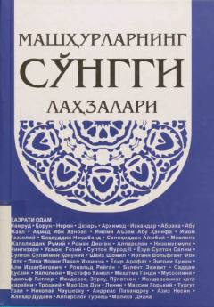

MSMashhur tarixiy shaxslar va hukmdorlarning hayotining so'nggi lahzalari haqidagi kitob.
Ushbu kitob dunyoni qo'rquv va hayratga solgan mashhur tarixiy shaxslar, sarkardalar, davlat arboblari hamda malikalarning hayotining so'nggi lahzalari haqida hikoya qiladi. Unda Odam alayhissalomdan tortib turli davr hukmdorlarining hayotidan so'nggi daqiqalar va o'lim lahzalari bayon etilgan. Asar tarixiy-ma'rifiy mazmunga ega.